Windows
Windows 10/11 · x64
Installer (.exe) .msiv0.5.4 · MIT licensed · Windows · macOS · Linux
The pipeline department for teams that don't have one. Pipeline OS opens every game, film and VFX project in the right app version, keeps its files organized, turns builds and renders into buttons, and tracks the work, all in plain files your team already shares through Git.
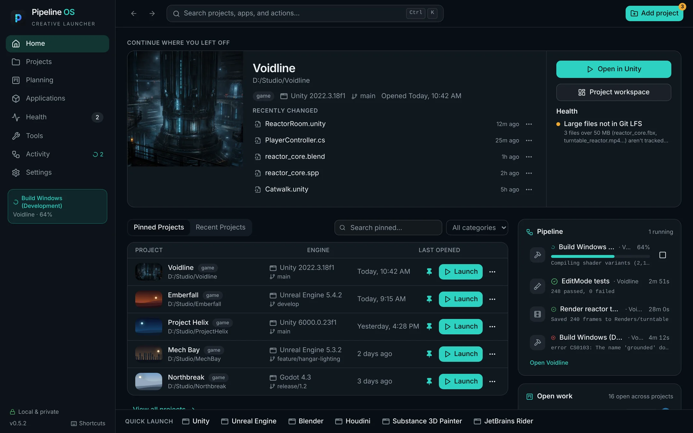
Registry, Unity Hub, Epic and Steam on Windows. App bundles on macOS. Desktop entries, Flatpak, Snap and AppImage on Linux. Plus PATH and common install folders.
Detected apps include Unity, Unreal Engine, Godot, Blender, Maya, Houdini, 3ds Max, Cinema 4D, ZBrush, Substance, Photoshop, Krita, Aseprite, Spine, DaVinci Resolve, Nuke, Wwise, FMOD, Rider, VS Code, Visual Studio, Xcode, Git and Perforce.
01 — The tour
An engine in one exact version, a few DCC apps, gigabytes of art, build scripts someone wrote once. Pipeline OS makes each project explain itself, so a new teammate clones it and everything is there.
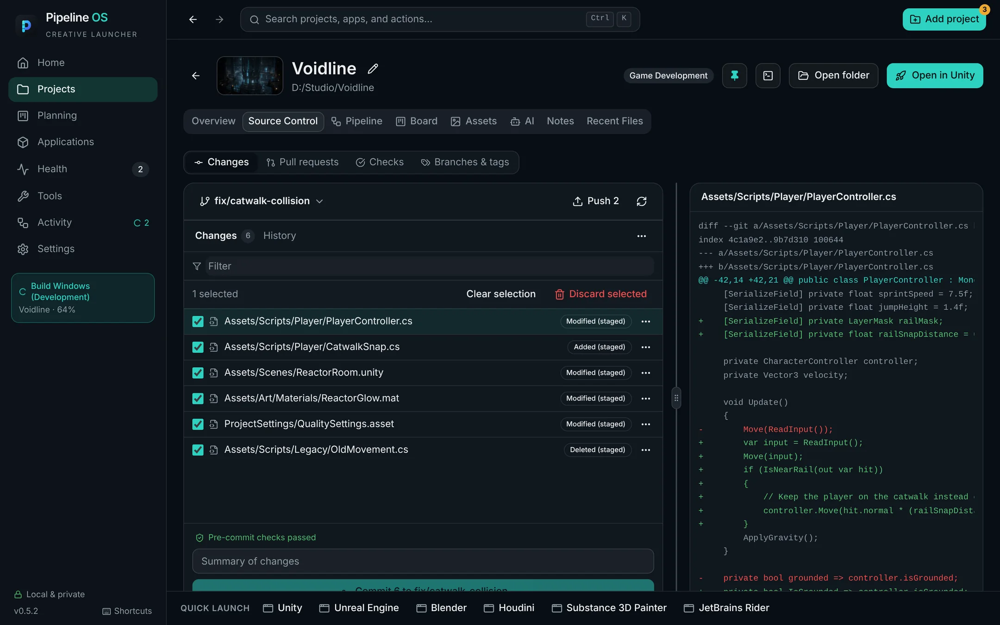
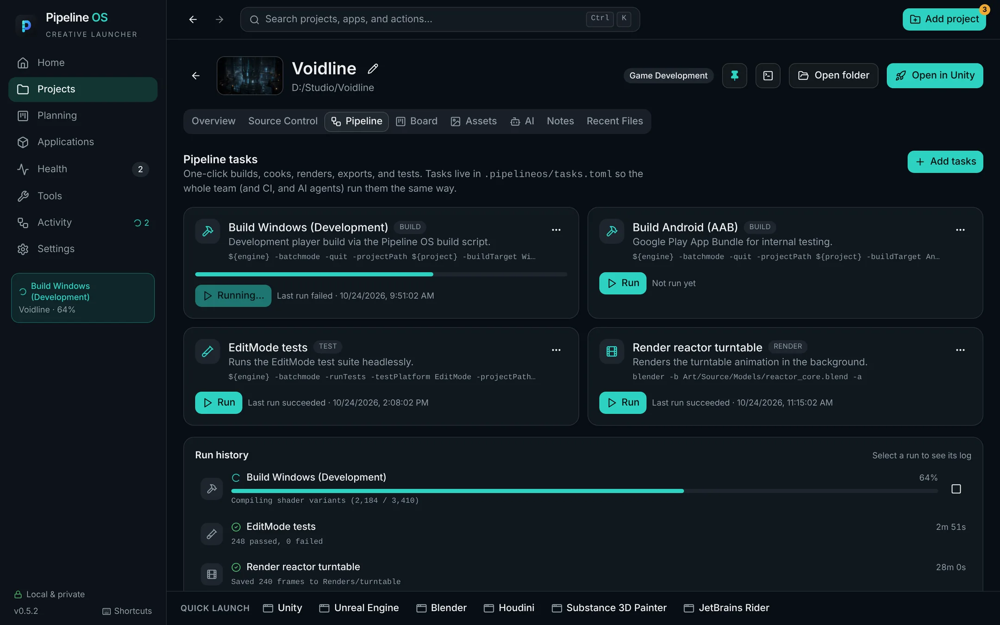
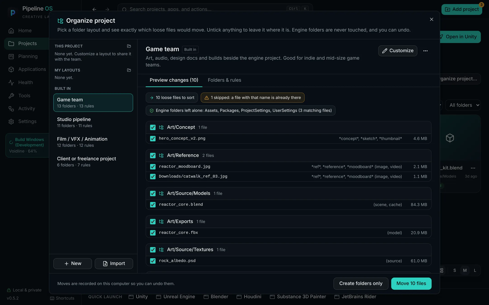
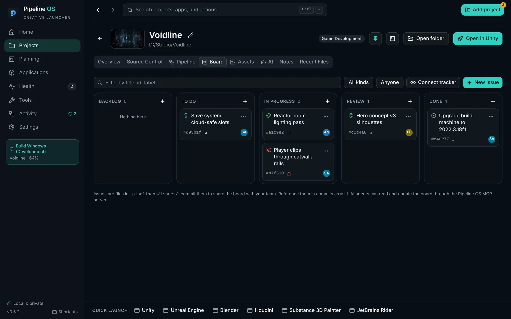
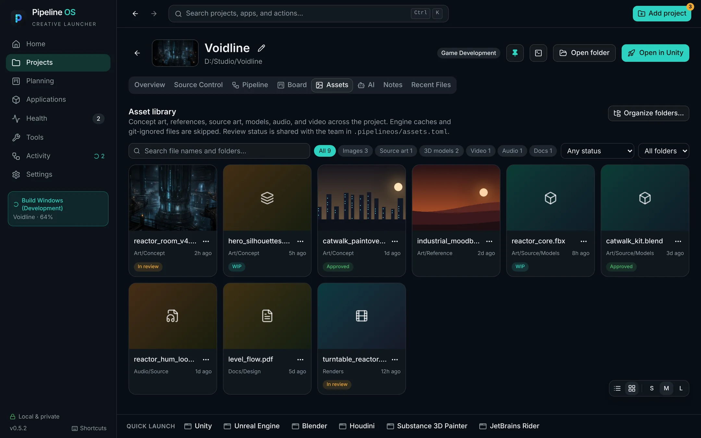
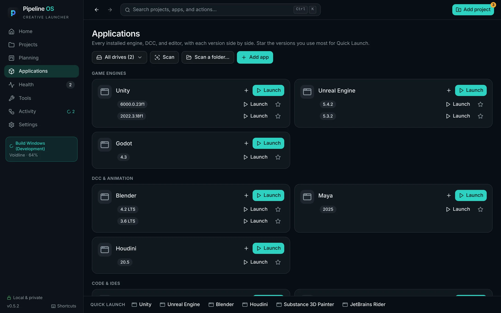
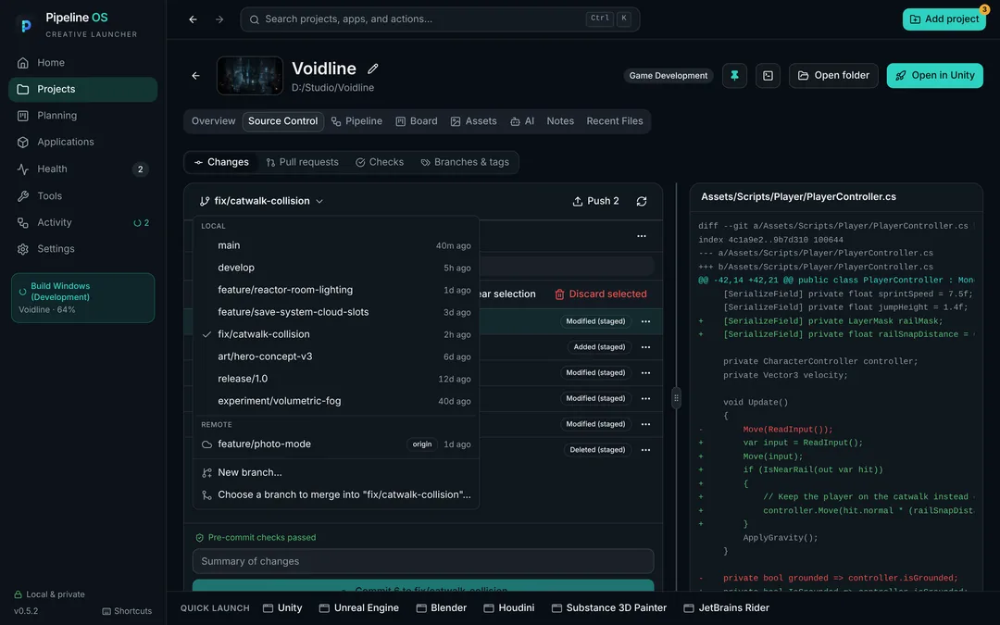
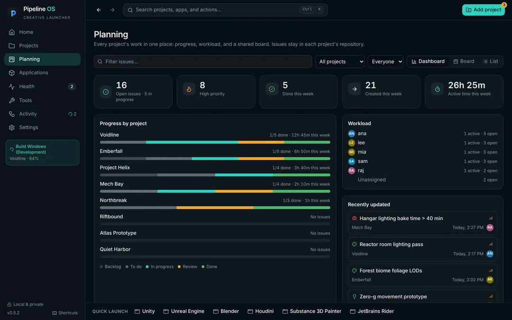
02 — One-click pipeline
Unity batch mode, Unreal BuildCookRun, Godot export, Blender render, or your own command. Each becomes a button with live logs, cancel and a run history that stays with the project.
Tasks live in .pipelineos/tasks.toml, so the whole team shares them through Git. When a task file arrives through the repo, you read the commands and trust them on your machine before any of them can run.
Build Windows (Development) 64%
Compiling shader variants (2,140/3,312)
EditMode tests 2m 51s
248 passed, 0 failed
Render reactor turntable 28m 0s
Saved 240 frames to Renders/turntable
Build Windows (Development) 4m 12s
error CS0103: The name 'grounded' does not exist in the current context
tasks.toml changed in the last pull. Review the 2 new commands before they can run on this machine.
03 — Made for AI agents
Library/.Every project gets a brief: the engine, how to build, which folders are generated and what is in flight. A built-in MCP server gives Claude, Cursor, Codex and others the same view you have.
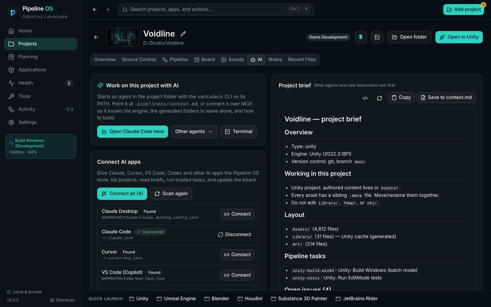
claude mcp add pipeline-os -- "C:/Program Files/PipelineOS/vantadeck.exe" mcpThe app shows this with the real path on your machine, and can set it up for you in one click.
.pipelineos/context.md for agents that read files.04 — Local first
Pipeline OS runs entirely on your machine. There is no account to sign into and no server to go down.
| Feature | Offline |
|---|---|
| Git fetch, pull, push, sync | Says the remote isn't reachable. Local commits are safe. |
| GitHub pull requests and checks | Refreshes on its own once you're back. |
| Tracker sync | Your local board is unaffected. |
| Update check | Fails quietly at launch. Can be turned off. |
05 — Scriptable
The vantadeck CLI ships inside the app. Every command takes --json and returns a stable envelope, and anything that changes something or touches a remote asks for --yes.
Team settings live in the project's .pipelineos/ folder and get committed. Absolute paths, credentials and personal preferences never go there.
# detect installed apps
vantadeck scan apps
# add a project and open it in its engine
vantadeck project import ~/Projects/MyGame
vantadeck project launch ~/Projects/MyGame editor
# run a pipeline task
vantadeck tasks run ~/Projects/MyGame build --yes
# fetch, pull and push
vantadeck project vcs ~/Projects/MyGame sync --yes
# AI-ready brief, and the MCP server
vantadeck context ~/Projects/MyGame
vantadeck mcp# .pipelineos/project.toml — committed with the project
schema_version = 1
name = "My Game"
project_type = "game-development"
[[linked_apps]]
app_id = "unity"
preferred_version = "6000.0.0"
[[launch_profiles]]
id = "editor"
name = "Open Editor"
app_id = "unity"
arguments = ["-projectPath", "{projectRoot}"]06 — Make it yours
Dark, light, Glass and High contrast, custom accent colors, density and reduced motion. A command palette on Ctrl K for everything, and ? for every shortcut.
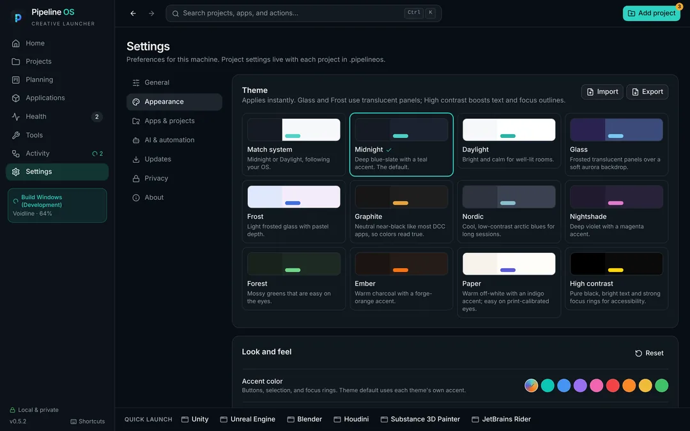
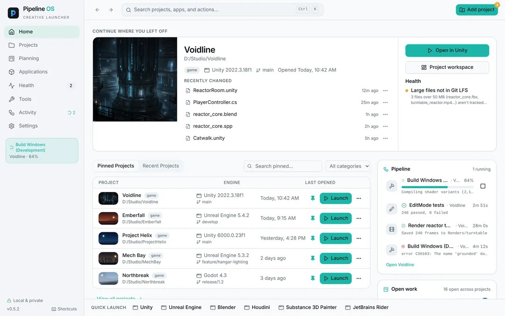
Free and MIT licensed. Version 0.5.4. Once installed, it updates itself.
Windows 10/11 · x64
Installer (.exe) .msiApple Silicon or Intel
Apple Silicon (.dmg) Intel (.dmg)x64
AppImage .deb .rpmThe installers aren't code-signed by Microsoft or Apple yet, so the first launch takes one extra step.
Windows: SmartScreen says "unknown publisher". Choose More info → Run anyway.
macOS: right-click the app, choose Open, then Open again. Or run:
xattr -dr com.apple.quarantine "/Applications/PipelineOS.app"Update files are signed, and every release ships SHA256SUMS.txt, SBOMs and Sigstore build provenance. See the release page.
PipelineOS Dev installs alongside the stable app with its own data and updates itself from the dev branch. Get it from the rolling dev-latest pre-release.
Needs Rust 1.96, Node.js 24 with npm 11, Git and the Tauri prerequisites for your OS.
git clone https://github.com/ojaseminem/Pipeline-OS.git
cd Pipeline-OS && npm install
npm run tauri --workspace @vantadeck/desktop -- dev